Летний огород: первая игра в подписке
Проблема
Пользователи работают с подпиской функционально и почти не чувствуют к ней привязанности. Партнёрские промокоды, которые должны оправдывать цену, остаются незамеченными. В опросах подписку называют дорогой для той ценности, что она даёт, а у tNPS есть потенциал роста.
Облегчённые геймифицированные механики с промокодами уже работали, но полноценную казуальную игру команда ещё не делала.
Стратегия и критерии успеха
Цель
Проверить, поможет ли полноценная игра вовлечь пользователей и познакомить их с партнёрскими предложениями
Подход
Сделать промокод наградой за игру, а не отдельным предложением на витрине. Игровой процесс должен был создавать эмоциональное вовлечение, а выбор приза знакомить с доступными выгодами.
Порог успеха до запуска не фиксировали, поэтому сравнивали с прошлыми облегчёнными механиками по той же воронке.
Охват
Вовлечение
Забор промокода
Решение
Я выбрала «Найди пару» на поле 4×4 без проигрыша. Это была первая полноценная игра на витрине: хотелось проверить интерес к формату, не добавляя барьер сложностью и риск фрустрации на пути к награде.
За каждую победу пользователь выбирает один из восьми партнёрских промокодов. Выбор встроен в экран на месте игрового поля, без отдельной модалки. Полученные промокоды сохраняются на экране призов. Когда все награды собраны, можно продолжать играть ради удовольствия.
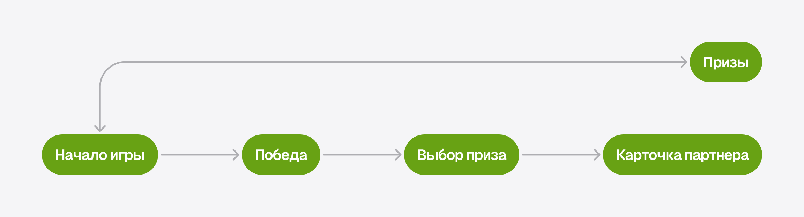
Состояния
Я проработала два набора состояний: коллекцию призов (от пустой до полной) и экран победы в зависимости от количества доступных призов.
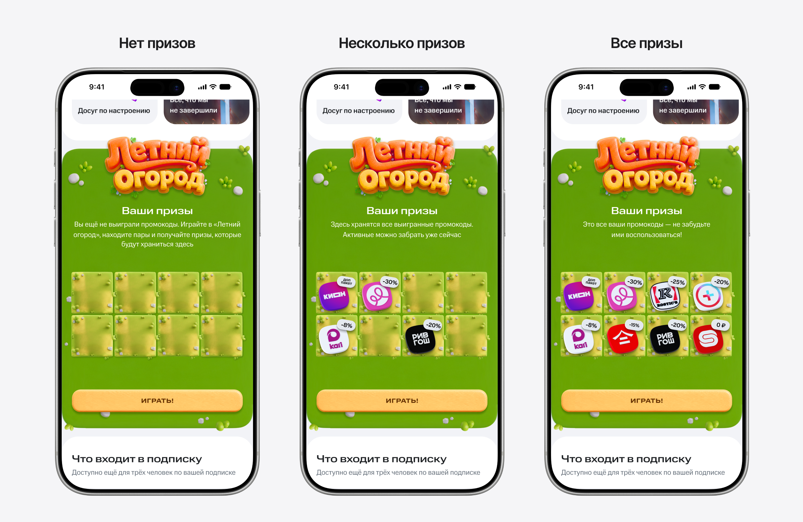
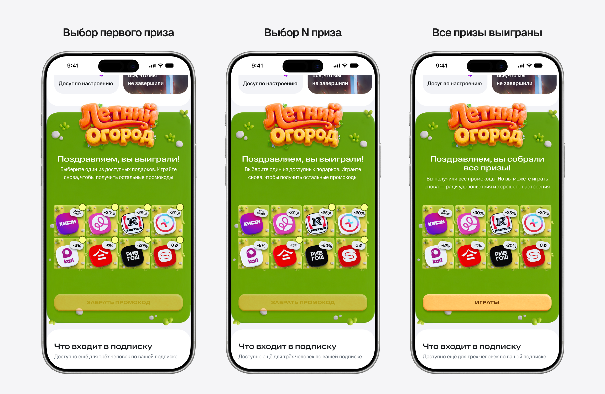
Визуал
Сложный 3D-стиль нельзя было нарисовать вручную за неделю, поэтому все карточки я сгенерировала нейросетью за два дня.
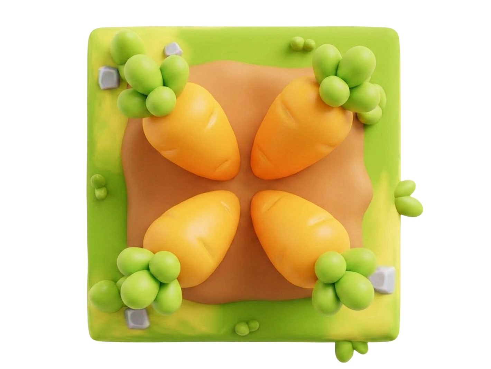
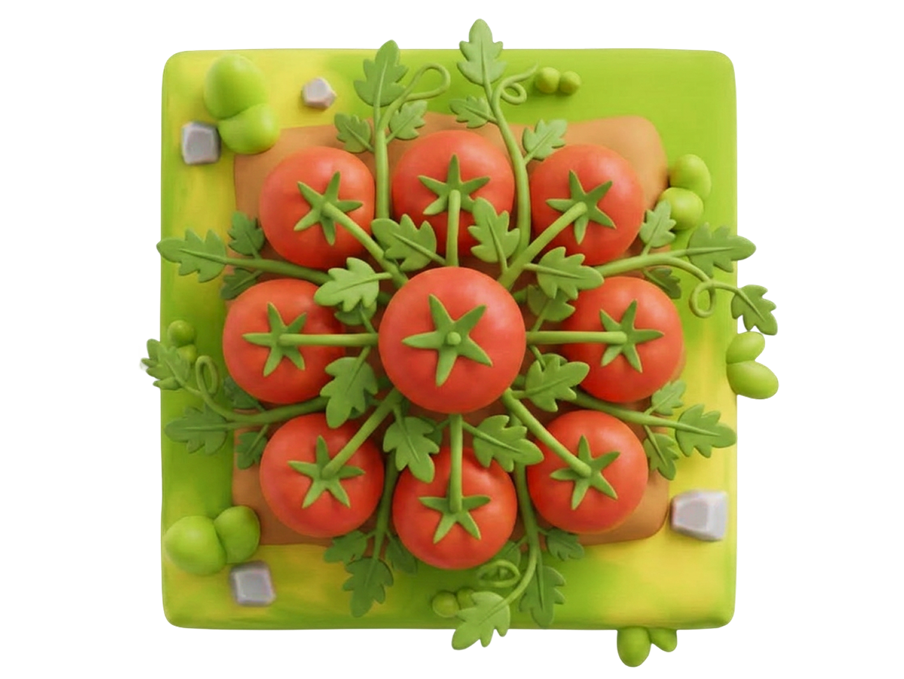
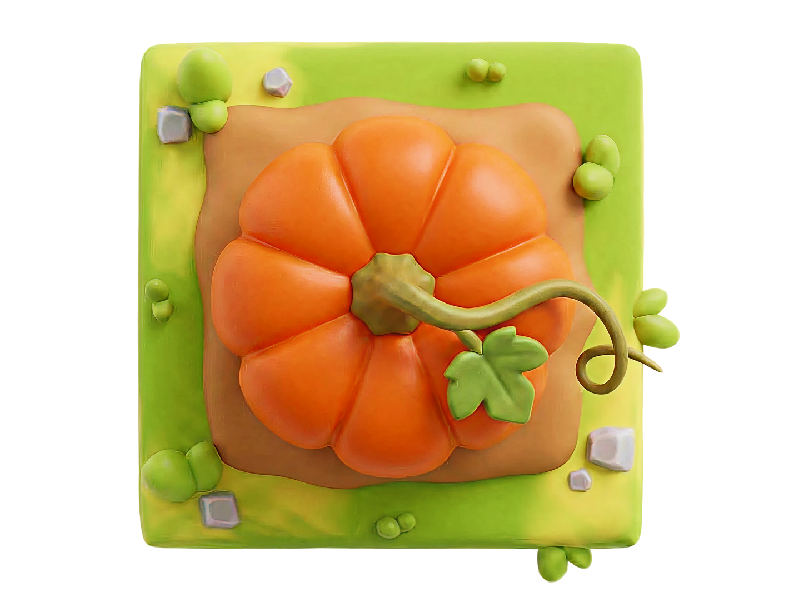
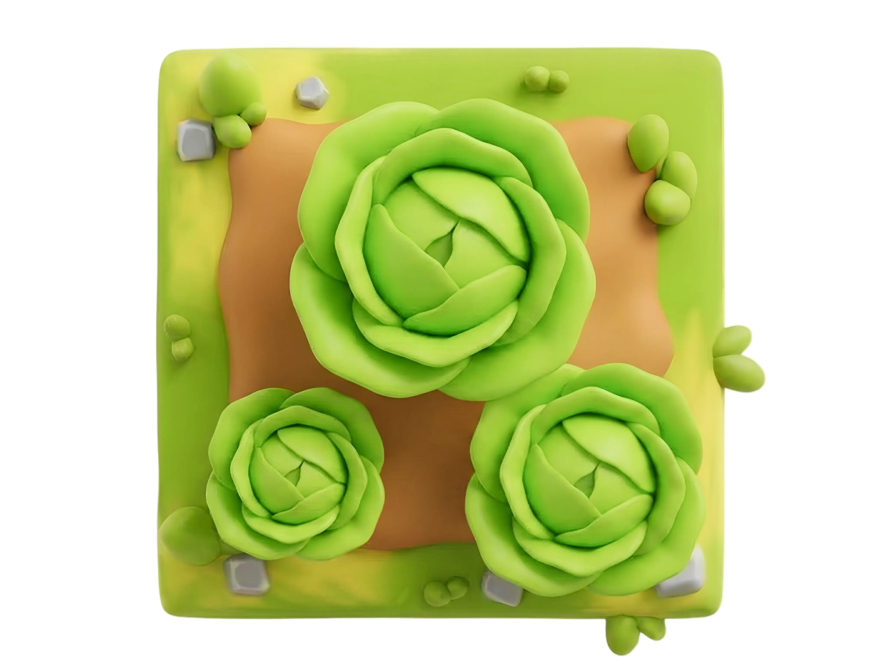
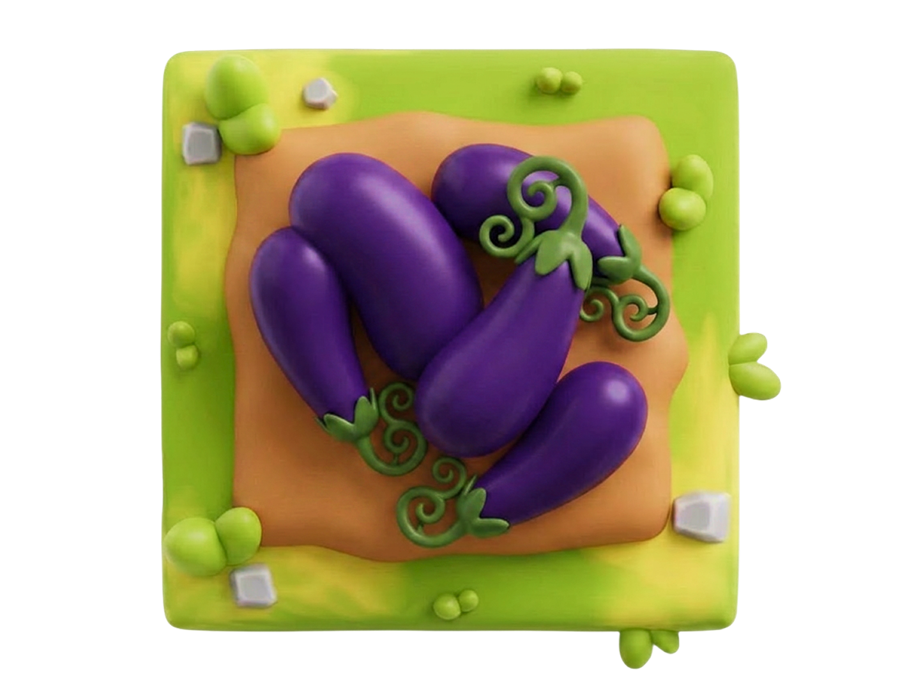
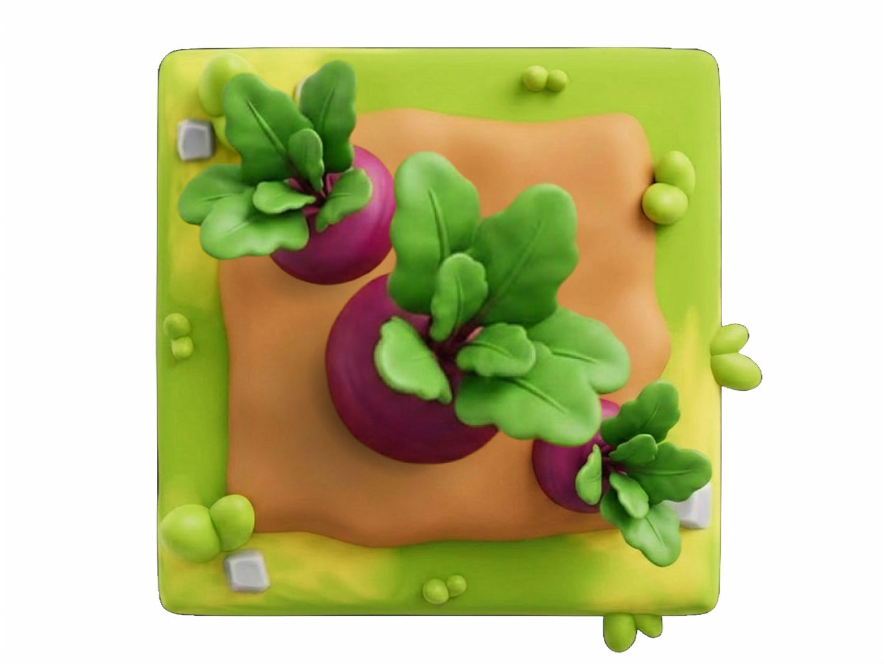
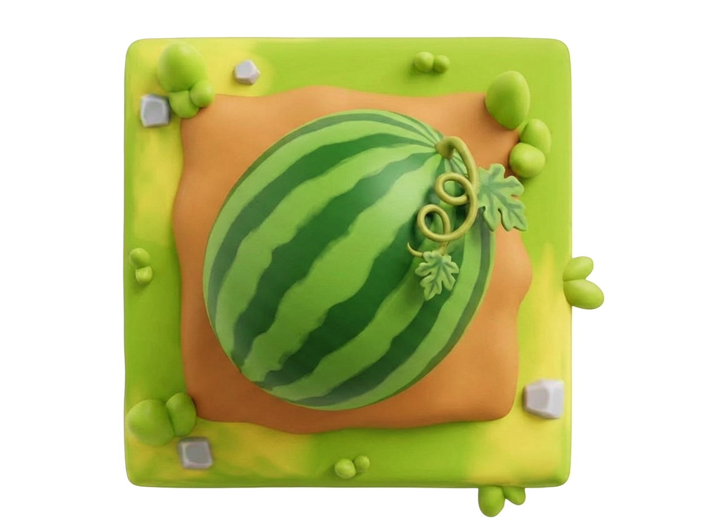
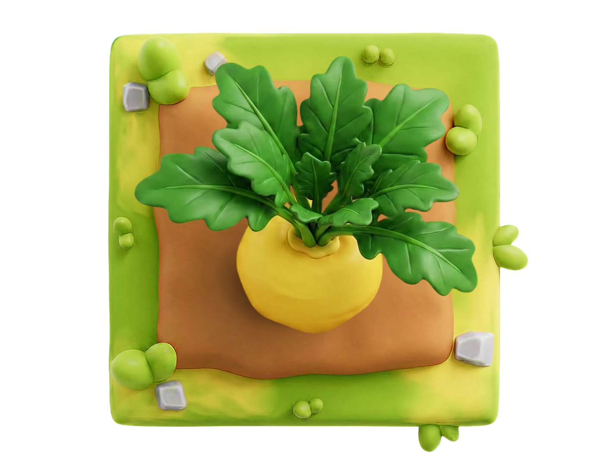
Как проверяли
Сравнение шло по двум методам одновременно
- Трекинг воронки внутри игры: охват, дошедшие до приза, забор промокода, время на сайте, возвращаемость.
- Сравнение tNPS между играющими и не играющими в одном периоде.
Подключения подписки не входили в исходные критерии успеха. Их зафиксировали как дополнительный результат, но отдельно влияние игры на подключения не проверяли.
Результаты
По заборам промокодов это самая успешная наша механика на момент оценки.
По итогам провели исследования по промокодам: кто что берёт, в каких регионах и по каким сегментам tNPS. Данные идут в планирование партнёрских механик.
Команда и мой вклад
С командой
Гипотезу формулировали с Discovery-командой, маркетолог подбирала партнёров, аналитики настраивали трекинг и оценивали результаты.
Мой вклад
- Предложила формат «Найди пару» без проигрыша и спроектировала игровой цикл с выбором награды.
- Разработала пользовательский путь, интерфейсы и состояния игры и коллекции призов.
- Сгенерировала визуальные ассеты за два дня, уложившись в недельный срок на дизайн.
Выводы
- Игра стала самой успешной нашей механикой по получению промокодов на момент оценки. Формат начали использовать для регулярных запусков.
- Дополнительный результат по подключениям показал, что эту метрику стоит закладывать в следующие эксперименты заранее.
Что было дальше
После запуска я перешла в команду кешбэка. Discovery-команда адаптировала механику для другой задачи: знакомить пользователей с банковскими привилегиями и вести к оформлению карты.
Вместе с Discovery-командой мы переосмыслили механику: вместо партнёрских промокодов — знакомство с преимуществами банка и награда 10 рублей кешбэка. Я спроектировала адаптированный интерфейс: поле 3×4 с иллюстрациями привилегий и экран победы с каталогом преимуществ и переходом к оформлению карты.
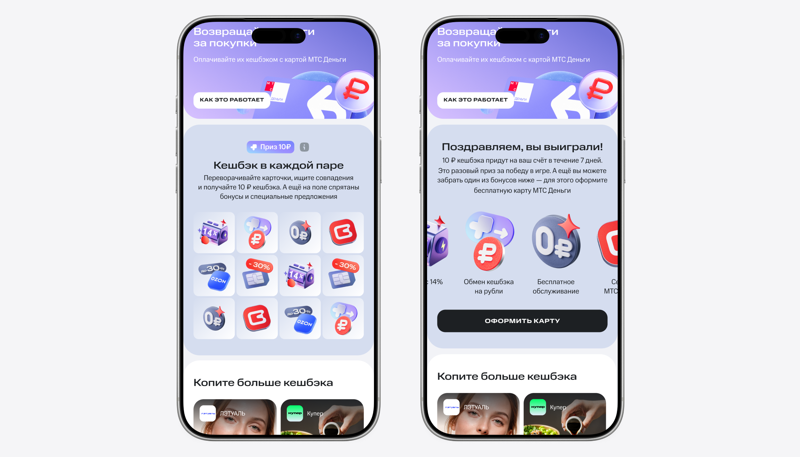